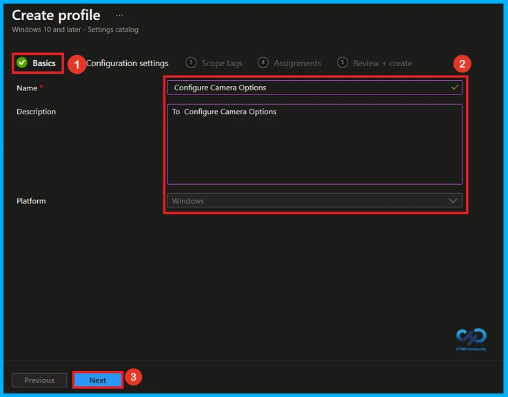
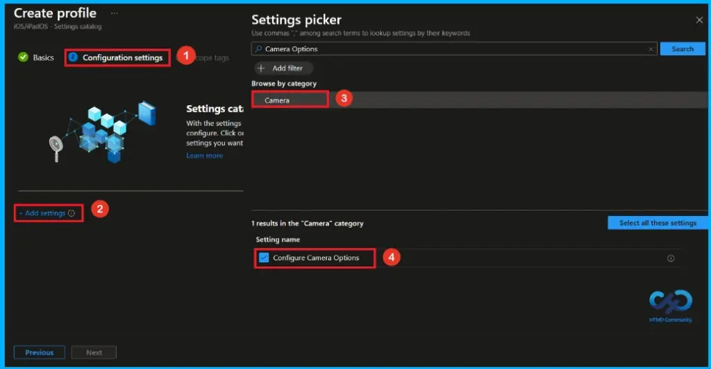
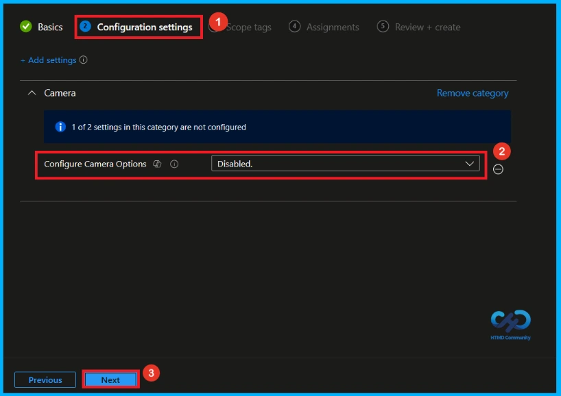
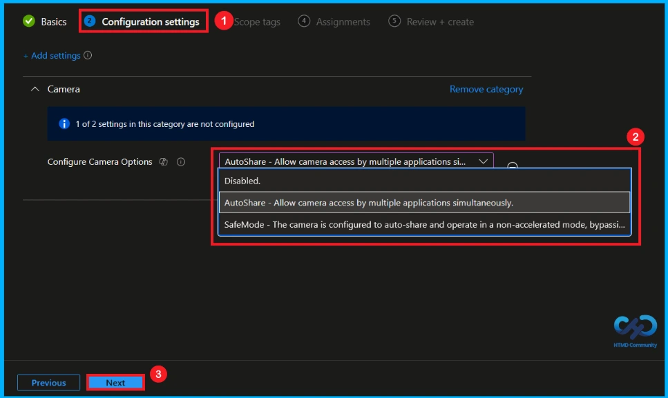
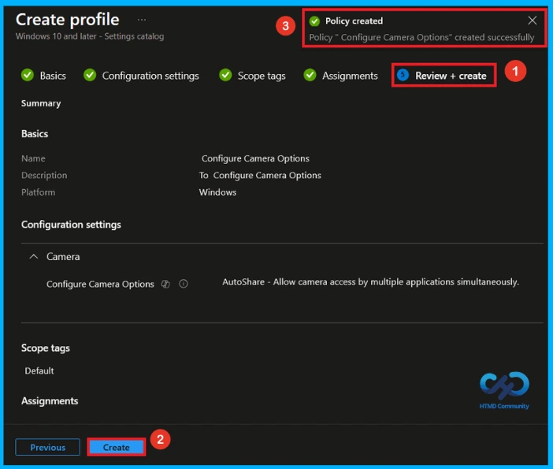
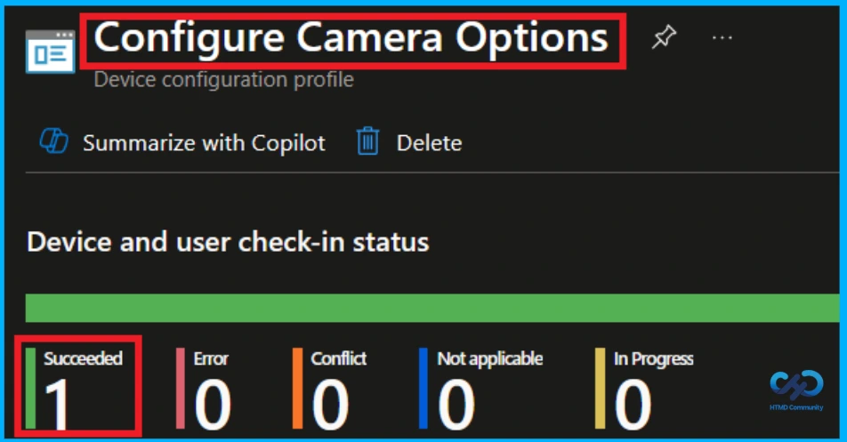
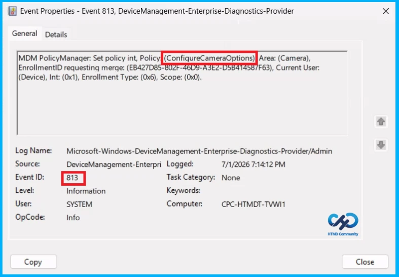
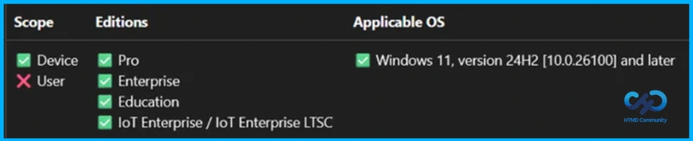
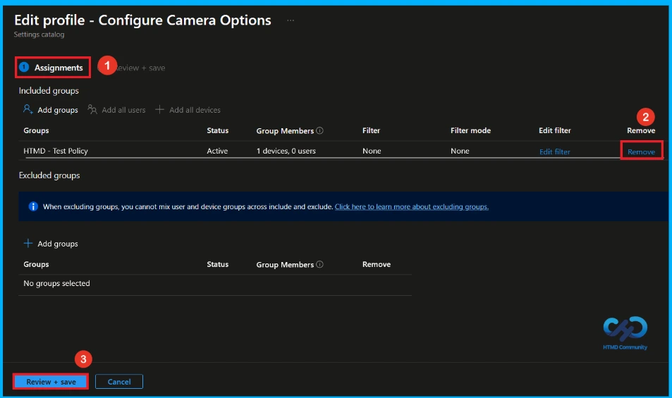
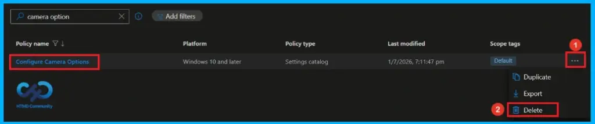

Key Takeaways
- IT admins can control camera settings on company devices.
- Safe Mode blocks unapproved apps from using the camera.
- Auto-Share Mode lets trusted apps use the camera automatically.
- The policy improves security, privacy, and user experience.
Hey, let’s discuss about how use Intune to Manage Camera Safe and Auto Share Modes for Better Compatibility and Secure Content Sharing. This policy allows IT admins to control how cameras work on company devices. They can choose Safe Mode, which blocks unapproved apps from using the camera, or Auto-Share Mode, which lets trusted apps like video meeting apps use the camera automatically. This helps keep devices secure while making them easy to use.
Table of Contents
Use Intune to Manage Camera Safe and Auto Share Modes for Better Compatibility and Secure Content Sharing
With this policy, the company can protect user privacy and improve the meeting experience. Safe Mode provides better security, while Auto-Share Mode saves time by reducing extra steps when joining online meetings. Together, these settings offer a simple and flexible way to manage cameras.
How to Create a Policy
First, Log in to the Microsoft Intune admin center. Go to the Devices section from the left menu. Next, select Configuration to open the device configuration settings. Click New Policy to create a new policy.

Create a Profile
A new window named Create Profile will appear on the screen. In this window, choose Windows 10 and later as the platform for the policy. Next, select Settings Catalog from the available profile types. After confirming these options, click Create to move to the next step.

Basic Step of Camera Option Policy Creation
After creating the profile, enter the basic details for the policy. Provide the policy name as Configure Camera Option and add a short description(To Configure Camera Option). The platform will already be set to Windows by default, so you only need to confirm it. Then, click Next to continue.

Configure Camera Option Policy
Within this tab, you will see an option called Add Settings. Click on it to proceed. After clicking, a new window named Settings Picker will open. From there, select the category and settings shown in the table below.
| Category | Setting |
|---|---|
| Camera | Configure Camera Options |

Disable Camera Option Policy
You can now close the Settings Picker window. After closing it, you will return to the Configuration Settings page. Here, the Configure Camera Option Policy will be set to Disabled by default. If you want to continue with disabling this setting, simply click Next.

Auto Share and Safe Mode
Go to Configure Camera Options and open the dropdown menu. From the list, select the option you want to enable, such as AutoShare or SafeMode. Click the Next button to proceed.
- AutoShare – Allow camera access by multiple applications simultaneously.
- SafeMode – The camera is configured to auto‑share and operate in a non‑accelerated mode, bypassing OEM/IHV‑provided plugins where applicable.

What is Scope Tag
he Scope Tag section is optional, so you can skip it if it’s not needed for your setup. It is mainly used for organizing and managing access to policies in larger environments. If you are not required to assign any scope tags, you can simply leave this step as it is and click Next to continue.

Assignment Tag to Assign Group
In the Assignments tab, you select which users or devices should get this policy. Click Add Group under Include Group, then choose the required group such as HTMD – Test Policy. After selecting the group, confirm the selection and click Next to continue.

Final Step of Camera Option Policy Creation
In this section, you will see a summary of all the details you have entered in the previous steps, including the basic information, configuration settings, and assignment details. If everything looks fine, click Create to complete the process. A notification will then appear confirming that the Configure Camera Options created successfully.

Device and User Check-in Status
To check the status of a policy, go to Devices > Configuration in the Intune portal. Then select the policy you created, such as Configure Camera Option, and verify that the status shows Succeeded (1). If you want quicker results, you can also perform a manual sync using the Company Portal.

Client Side Verification
To confirm if a policy has been applied, use the Event Viewer on the client device. Go to Applications and Services Logs > Microsoft > Windows > Device Management > Enterprise Diagnostic Provider > Admin. From the list of policies, use the Filter Current Log option and search for Intune event 813.
MDM PolicyManager: Set policy int, Policy (ConfiqureCameraOptions),Area: (Camera),
EnrollmentID requesting merge: (EB427D85-802F-46D9-A3E2-D5B41458/F63), Current User:
(Device), Int: (0x1), Enrollment Type: (0x6), Scope: (0x0).

Configuration Service Provider (CSP)
The Policy Configuration Service Provider (CSP) is a feature used by organisations to manage and control settings on Windows 10 and 11 devices.
Description framework properties:
- Format – int
- Access Type – Add, Delete, Get, Replace
- Default Value – 0
Allowed values:
| value | Description |
|---|---|
| 0 | Disabled |
| 1 | AutoShare |
| 2 | AutoShare |
Group policy mapping:
| Name | Value |
|---|---|
| Name | ConfigureCameraOptions |
| Path | Camera > AT > WindowsComponents > L_Camera_GroupPolicyCategory |
| Element Name | ConfigureCameraOptions_Enum |

How to Remove Assigned Group from Camera Option
If you want to remove the specific group that you previously selected, you can easily do that. First, go to Devices > Configuration policies. In the Configuration policy section, search and select the policy(Configure Camera Option). In the Assignment section, you will find an Edit option and click Remove option. Then, click the Review+ Save option.
For detailed information, you can refer to our previous post – Learn How to Delete or Remove App Assignment from Intune using by Step-by-Step Guide.

How to Delete Camera Option Policy from Intune
First, search for the policy name(Configure Camera Option) in the configuration section. When you find the policy name, you will see a 3-dot menu next to it. Click on the 3 dots, then click the Delete button.
For detailed information, you can refer to our previous post – How to Delete Allow Clipboard History Policy in Intune Step by Step Guide.

Need Further Assistance or Have Technical Questions?
Join the LinkedIn Page and Telegram group to get the latest step-by-step guides and news updates. Join our Meetup Page to participate in User group meetings. Also, join the WhatsApp Community and the Whatsapp channel to get the latest news on Microsoft Technologies. We are there on Reddit as well.
Author
Anoop C Nair has been Microsoft MVP from 2015 onwards for 10 consecutive years! He is a Workplace Solution Architect with more than 22+ years of experience in Workplace technologies. He is also a Blogger, Speaker, and Local User Group Community leader. His primary focus is on Device Management technologies like SCCM and Intune. He writes about technologies like Intune, SCCM, Windows, Cloud PC, Windows, Entra, Microsoft Security, Career, etc